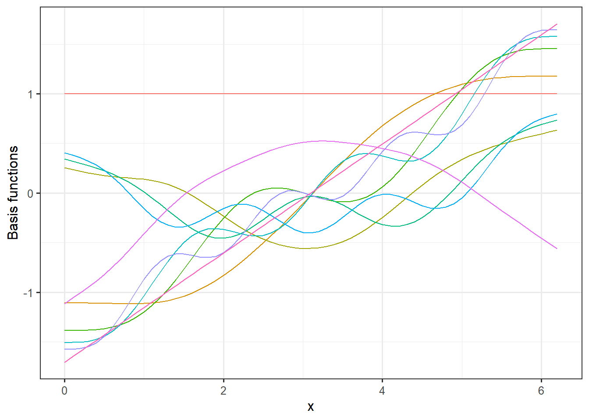

3 Non-linear regression
As we saw in the previous lecture in the example illustrating the overfitting concept, we do not always have a linear relationship between the response and the covariates. In that example, the relationship was a periodic sine function. Other examples of non-linear relations can be polynomial-, exponential- and logistical functions. There are many non-linear regression models designed for solving different problems, but we will mainly focus on the generalized additive models (GAMs). These are quite closely related to generalized linear models (GLMs). There are a few options for R packages for GAMs, but we will focus on the mgcv package (Wood 2017).

(#fig:examples of nonlinear relations)Examples of relationsships between x and y.
In the figure above, we illustrate different types of relationships between x and y. The green one is a linear one, while the others are non-linear. The red curve is even an additive combination of some of the other types of curves, i.e.
\[ y(x) = -0.3 x + 0.5 \sin(x)+ 0.5 \log(x+1) - 0.02 x^2 + \exp((x+1)/10).\] This is actually not so different from the principal idea behind GAMs. A GAM uses a set of basis functions, often called smoothers, to map the dependent variables and use the transformed variables as covariates in an additive manner. We will explain this further.
For a simple linear model, we have that the expected value of the \(i\)th variable is \(\mathrm{E} Y_i = \mu_i = \beta_0+\beta_1 X_i\). For a generalized linear model, the relationship is mapped using a link function \(g\), such that \(g(\mu_i) = \beta_0+\beta_1X_i\). For a generalized additive model we take it one step further, by also mapping the dependent variable:
\[g(\mu_i) = \beta_0 + \sum_{j=0}^k \beta_j f_j(X_i),\]
where \(\{f_j:\, j = 1,\ldots, k\}\) is a set of basis functions. The standard in the mgcv package is to use thin plate splines.
3.1 GAM example
In the video below, Sondre goes through this section’s example in a bit more detail and with more in-depth explanations of the code. You can also read the example below the video.
We will simulate a dataset where the “true” relationship between X and Y is given by (for observation \(i\)), \[Y_i = 0.5X_i + \sin(X_i)+Z_i, \quad \text{where } Z_i\sim N(0,0.29^2).\]
We start by generating the data in a tibble data frame:
set.seed(123) # seed for reproducibility
dat <- tibble(
x = seq(0, pi * 2, 0.1),
sin_x = .5*x+sin(x), # expected value
y = sin_x + rnorm(n = length(x), mean = 0,
sd = sd(sin_x / 2))) # add noise
head(dat) # print first 6 observations## # A tibble: 6 x 3
## x sin_x y
## <dbl> <dbl> <dbl>
## 1 0 0 -0.162
## 2 0.1 0.150 0.0833
## 3 0.2 0.299 0.749
## 4 0.3 0.446 0.466
## 5 0.4 0.589 0.627
## 6 0.5 0.729 1.22We can plot the true underlying signal (black line) and the observations (black dots) adding a linear regression line (blue) ontop. Clearly a linear model would fit poorly to these data.
ggplot(dat, aes(x = x, y = y)) + geom_point() +
geom_smooth(method = "lm") + geom_line(aes(y = sin_x))## `geom_smooth()` using formula 'y ~ x'Instead, we will use a GAM model. As you will see below the syntax is very similar to the glm or even lm function in base R.
library(mgcv) # gam package
mod <- gam(y ~ s(x), data = dat, method = "REML")The mgcv package uses the syntax y ~ s(x) to specify the model. This means that y is modelled as a smooth function of x. If nothing else is specified, the procedure will use a thin plate spline and determine the number of basis functions to use itself. You can also fix this by setting the \(k\) argument of the \(s()\) function. When problems with overfitting occur, you can tackle this by setting a lower value for \(k\) or setting the smoothing parameter. This argument is \(sp\) in the \(s()\) function. We will not go into details about this here, but in general it is recommended to use method = “REML”. This means the model is using restricted maxmimum likelihood for the estimation and use this algorithm to set of the smoothing parameter for you.
Let’s look at the model summary.
summary(mod)##
## Family: gaussian
## Link function: identity
##
## Formula:
## y ~ s(x)
##
## Parametric coefficients:
## Estimate Std. Error t value Pr(>|t|)
## (Intercept) 1.56585 0.03236 48.39 <2e-16 ***
## ---
## Signif. codes: 0 '***' 0.001 '**' 0.01 '*' 0.05 '.' 0.1 ' ' 1
##
## Approximate significance of smooth terms:
## edf Ref.df F p-value
## s(x) 6.367 7.517 37.88 <2e-16 ***
## ---
## Signif. codes: 0 '***' 0.001 '**' 0.01 '*' 0.05 '.' 0.1 ' ' 1
##
## R-sq.(adj) = 0.821 Deviance explained = 83.9%
## -REML = 15.726 Scale est. = 0.065972 n = 63Here you can see we have a significant intercept term and a approximate significance of the smooth term. The procedure uses an approximation here because the smooth term not really just one covariate. It is important to check that the estimated degree of freedom (edf) is not very close to the reference degree of freedom (Ref.df). This indicates that model has not been given enough flexibility and you could consider setting a higher \(k\) value for the smoother.
Let’s have a closer look at the smoothing terms being used in this model. In the code below we extract the model matrix and plot the basis function. To have a slightly deeper understanding of what the GAM model does is that it creates a weighted sum of these basis functions to, as optimally as possible, fit the underlying curve of the data.
# Extract model matrix:
MM <- model.matrix(mod)
MM <- as_tibble(MM)
MM$x <- dat$x
MM <- pivot_longer(MM, -x)
# Plot basis functions
ggplot(MM, aes(x = x, y = value, group = name, col = name)) +
geom_line() +
theme_bw(12)+
theme(legend.position = "none") +
labs(y = "Basis functions") If we multiply these basis functions with the weights for the fitted model, we get the additive terms that constitutes the full model prediction.
# Extract coefficient from the model and merge model matrix:
coefs <- tibble(coef = coef(mod))
coefs$name <- names(coef(mod))
MM <- left_join(MM,coefs, by = "name")
# Plot model weigthed basis functions
ggplot(MM, aes(x = x, y = value*coef, group = name, col = name)) +
geom_line() +
theme_bw(12)+
theme(legend.position = "none") +
labs(y = "Model weigthed basis functions")
Here you can see how the different curves contribute the full signal. Lets have a look at the final prediction and plot that along with a 95% confidence interval, the observations and the true signal.
pred.mod <- predict(mod, se.fit = TRUE) # predict values with standard error
dat <- dat %>%
mutate(pred = pred.mod$fit,
lwr = pred - 1.96 * pred.mod$se.fit,
upr = pred + 1.96 * pred.mod$se.fit)
ggplot(data = dat, aes(x = x)) +
geom_point(aes(y=y)) +
geom_line(aes(y = pred), col = "magenta")+
geom_ribbon(aes(ymin = lwr, ymax = upr), alpha = .3, fill = "magenta") +
theme_bw(12) +
labs(
x = "x",
y = "y"
)Normally, we would do the train-test split, but in this example we know the truth and the point of the exercise is to reproduce the underlying signal.
As a last element of this example, we will see how well the model extrapolates as we try to predict the signal for values the model has not “seen.” For the training we used values of \(x\) between 0 and \(2\pi\). Let’s see how it performs for values of x between \(2\pi\) and \(3\pi\).
# Setting up new data:
dat.ext <- tibble(
x = seq(2*pi, 3*pi, 0.1),
sin_x = 0.5*x+sin(x) # underlying signal
)
# Predicting
pred.ext <- predict(mod, newdata = dat.ext, se.fit = TRUE, type =)
# adding predictions to data frame:
dat.ext <- dat.ext %>%
mutate(pred = pred.ext$fit,
lwr = pred - 1.96 * pred.ext$se.fit,
upr = pred + 1.96 * pred.ext$se.fit)
# Plotting results:
ggplot(dat.ext, aes(x = x))+
geom_line(aes(y = pred), col = "magenta")+
geom_ribbon(aes(ymin = lwr, ymax = upr), fill = "magenta", alpha = 0.3)+
geom_line(aes(y = sin_x), col = "red")+
theme_bw(12)First of all, note the width of the prediction intervals. As the model has not been trained on these values of \(x\), it is expected that these are quite wide. It is comforting that the underlying signal (in red) is inside the intervals, but as you can see the shape of the curve is not very near the true signal. Hence, such a prediction will not be very informative.
Finally, let’s make a plot, combining the prediction with the training data. Note that we add the y=NA since this column is not included in the dat.ext data frame. We also add the type column to separate the two data sources and split the coloring based on this column.
dat.combined <- rbind(
dat %>% mutate(type = "training"), # adding colum type to split
dat.ext %>% mutate(y=NA, type = "extrapolation")# the two data sources by
)
ggplot(dat.combined, aes(x=x, col = type, fill = type))+
geom_point(aes(y=y), color = "black") +
geom_ribbon(aes(ymin = lwr, ymax = upr), alpha = .4)+
geom_line(aes(y=pred))+
geom_line(aes(y=sin_x), col = "yellow", lwd = 1.2, lty =2)+
theme_bw(12)## Warning: Removed 32 rows containing missing values (geom_point).The warning about the 32 missing values are because we added y=NA to the dat.ext data frame.
Data camp
There is a very informative and useful GAM module on data camp that we can highly recommend called Nonlinear modeling in R with GAMs - especially chapter 1 and 2.